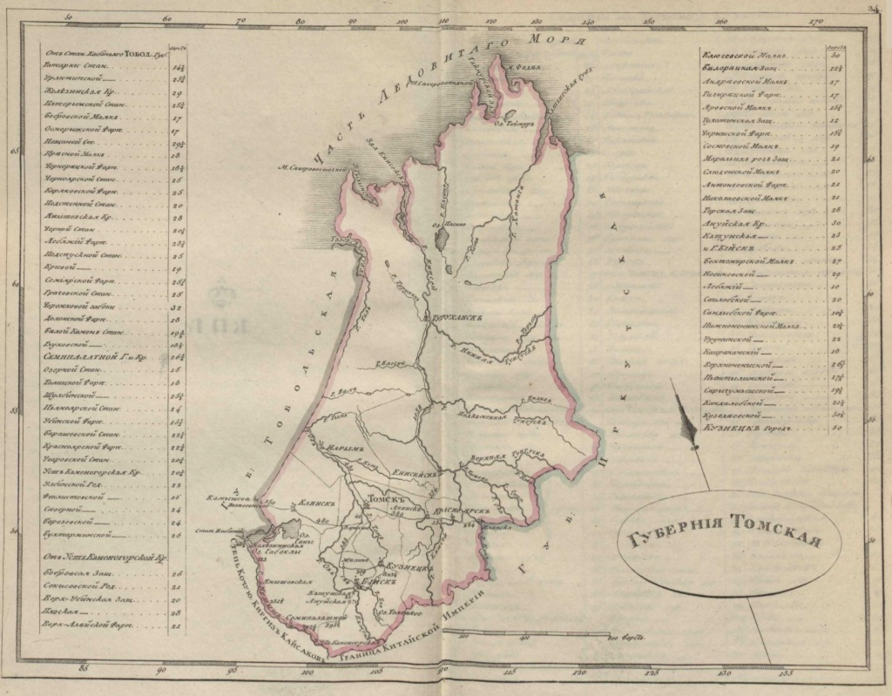

Предисловие
Томск – прогрессивный город, он меняется и развивается очень быстро. Город, где мечты воплощаются в реальность.
20 января 1604 года в Москву с посольством ко двору русского царя Бориса Годунова приехали послы во главе с князем татарского племени эушта Тояном, с просьбой о приёме эуштинского племени под власть Москвы и о возведении на его землях над р. Томью русского города для защиты эуштинцев от нападений воинственных соседей — киргизов и калмыков.
Томский острог был основан в июне того же года, поэтому День города отмечается 7 июня, на южном мысу Воскресенской горы, возвышающейся над правым берегом Томи. Стройка велась соединенным отрядом русских служилых людей под командованием Г. Писемского из Сургута, В. Тыркова из Тобольска и Д. Юрьева из Тюмени и закончилась 27 сентября 1604 г.
Томский острог и становление города
Томская крепость была выполнена в технике «городней», поставленных четырехугольником, общей площадью в 0,2 га. Общая длина городских стен достигала 98 саженей с аршином. Высота стен доходила до 6,5 м. По углам стояли 4 глухих башни. На северной и южной городовой стене находились проезжие башни, высота которых колебалась от 13 до 22 м. В городе находились воеводский двор, съезжая изба, житницы, амбары и Троицкая церковь, срубленная в 1606 г.
В 1634 году был построен новый острог по посаду по обе стороны реки Ушайки, где жила основная масса горожан, так называемый «Нижний острог». В 1639 и 1643 годах Томск сильно выгорел
К 1652 году было закончено строительство новых городских укреплений, общий вид которых дошел до нас в реконструкции В.И. Кочедамова. По ней Томск также делился на город и острог, площадь которых была уже примерно одинаковой. Городовые стены также были выполнены в технике городней, по углам стояли глухие башни. Кроме того, проезжие башни находились на северной,южной и западной сторонах.
Становление города
- В 1635 г. в Томске всех служилых, посадских и крестьян насчитывалось около 720 человек, а все население составляло около 2 тыс. человек.
- В 1723 г. в Томске было 1050 дворов, в которых проживало 8,5 тыс. человек различных сословий.
- В 1790 г. окружность территории города 8,5 версты, длина – 3, ширина – 1 верста и 100 саженей. Город делился на 7 частей. Городские укрепления к тому времени уже не сохранились. В Томске насчитывалось 7 церквей, 1 монастырь, 3 торговых ряда с 237 лавками, 1436 городских обывательских домов.
Томск принадлежал к числу пашенных городов и первой экономической основой для его развития послужило пашенное земледелие. Но очень скоро возникает развитое ремесленное производство. В 1625—1626 г. в Томске было около 20 ремесленников, в 1655 г. их уже около 70, а в 1721 г.— 384 ремесленника разных специальностей. Уже в середине XVII в. в городе насчитывалось более 50 ремесленных специальностей, среди которых были занятия, требующие высокого профессионального мастерства, например, котельщики, бронники, серебренники, часовщики, иконники и другие.
Город сыграл выдающуюся роль не только в истории Западной, но и всей Сибири. Основанный вначале как небольшая деревянная крепость для защиты местного населения, он вскоре стал основным центром, базой, откуда направлялись отряды казаков для проведывания «немирных землиц» от алтайских гор и верховьев р. Енисея до забайкальских степей и берегов Тихого океана. Именно томскими служилыми людьми были проложены первые тропы в этой части Сибири.
Томская губерния
В 1719 году Томск был причислен к Енисейской провинции, в 1726 году – к Тобольской провинции, а в 1782 году получил статус областного города Тобольского наместничества. После открытия Сибирского тракта Томск стал важным центром транзитной торговли, в 1738 году в Томске возникает Ямская служба. Постепенно город вырос до статуса регионального административного центра и в 1804 году стал центром огромной Томской губернии, которая включала в себя территории нынешних Алтайского края, Кемеровской, Новосибирской и Томской областей, Восточно-Казахстанской области Казахстана и часть Красноярского края. Начиная с конца 1830-х годов население Томска быстро росло благодаря увеличивающейся золотодобыче в Сибири.
Уже в первых десятилетиях XVII в. в Томске организуется промышленное железоделательное производство, одно из самых первых в Сибири. Высокого искусства достигли плотницкое дело и обработка дерева.

Карта Томской губернии из карманного почтового атласа Российской Империи 1808 года.
Крупнейший торговый и промышленный город Сибири
Развитие томской промышленности стимулировалось не только потребностями местного рынка, но и нуждами обследования и изучения всей Сибири. Благодаря близкому тогда соседству с южными районами Сибири, Томск очень рано стал крупным торговым городом. Как писал Г. Ф. Миллер, уже в XVIII в. «город Томск более достоин купеческим городом называться, понеже в нем живут не токмо многие знатные русские купцы, но и богатые бухарцы и татары, составляющие купечество». Томск — один из важных центров торгово-транзитного движения населения Сибири, путей сообщения. К числу градообразующих функций города следует отнести и его административную значимость как областного, «разрядного» города.
К началу XX века в Томске насчитывалось 208 заводов и фабрик. Кроме традиционных кожевенных, салотопенных, свечных, кирпичных предприятий, в городе организуются гильзовое, мебельное, конфетное производства. К тому времени в Томске проживало свыше 25 тысяч человек, было построено 13 тысяч зданий, из них 6 тысяч жилых домов. В городе было электрическое освещение, трамваи, телефонная сеть. Будучи торгово-промышленным центром, Томск опередил все прочие города Ссибири. Его значение центрального склада крупных русских сибирских фирм росло с каждым годом.
Летний рыбный базар
Каменный мост через реку Ушайку
Деревянное зодчество: Томское кружево
Томская архитектура и деревянное зодчество того времени обладали «строгим и вместе с тем живописным силуэтом, представительностью фасадов домов, добротностью стройки и прекрасным, мастерским декором...».
Дом архитектора Хомича, согласно преданиям именно в таком доме жил волшебник Изумрудного города из книги писателя Александра Волкова. Находится дом на улице Белинского.
Дом Ахмедулла Ахметова на улице Татарской. Наличники окон, фронтоны, фризы и пилястры, закрывающие места соединения бревен, украшены пышной резьбой с растительным орнаментом, являющейся фирменным знаком томских мастеров. А кронштейны, поддерживающие крышу, оформлены сквозной резьбой, придающей им сходство с воздушными кружевами.
Богатые жители города соревновались между собой в изысканности отделки своих домов. Отставной фельдфебель Желябов, желая опередить соперников, заказал постройку комплекса из четырех домов. Один из них известен как «Дом с жар-птицами». Его башенки со шпилями, треугольные фронтоны, декорированные кружевной резьбой, и стилизованные фигурки жар-птиц, украшающие крышу, являются визитной карточкой деревянного дома.
Томск — важный культурный и научный центр
Томск — важный культурный центр Сибири XVII в. Уже в конце 1620-х гг. на рынке города в продаже появляются книги. Во второй половине XVII в. возникает свое городовое летописание.
По числу учебных заведений Томск уже 100 лет занимает первое место в Сибири: в 1878 году в Томске был основан первый в азиатской части России Императорский университет, в 1900 году Технологический институт, высшее техническое учебное заведение, а затем Высшие женские курсы. В городе работали 59 гимназий, училищ, школ, три публичные библиотеки, театр, отделение Московского общества сельского хозяйства, городские общества садоводства, охоты, содействия физическому развитию детей, отдел Русского музыкального общества.
Сегодня Томск является старейшим в Сибири крупным образовательным, научным и инновационным центром. В городе работают 9 вузов, 15 НИИ, 6 бизнес-инкубаторов. Город богат памятниками деревянной и каменной архитектуры.